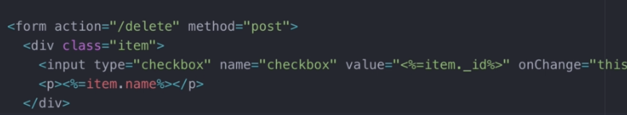

Hiddent technique
Sometimes, you may have a form that needs more than one value, but a single input cannot have 2 different values. Instead, we could just add another input that is not visible to the user/

We can add a type hidden input to the form. This will provide you better control to the backend whenever needed.